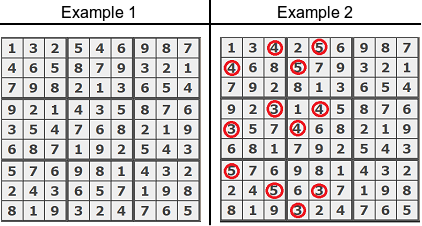

Task
Sudoku is a number-placement puzzle. The objective is to fill a 9 × 9 grid with digits so that each column, each row, and each of the nine 3 × 3 sub-grids that compose the grid contains all of the digits from 1 to 9.
This algorithm should check if the given grid of numbers represents a correct solution to Sudoku.
Example
- For
grid = [[1, 3, 2, 5, 4, 6, 9, 8, 7], [4, 6, 5, 8, 7, 9, 3, 2, 1], [7, 9, 8, 2, 1, 3, 6, 5, 4], [9, 2, 1, 4, 3, 5, 8, 7, 6], [3, 5, 4, 7, 6, 8, 2, 1, 9], [6, 8, 7, 1, 9, 2, 5, 4, 3], [5, 7, 6, 9, 8, 1, 4, 3, 2], [2, 4, 3, 6, 5, 7, 1, 9, 8], [8, 1, 9, 3, 2, 4, 7, 6, 5]]the output should be
sudoku(grid) = true; - For
grid = [[1, 3, 2, 5, 4, 6, 9, 2, 7], [4, 6, 5, 8, 7, 9, 3, 8, 1], [7, 9, 8, 2, 1, 3, 6, 5, 4], [9, 2, 1, 4, 3, 5, 8, 7, 6], [3, 5, 4, 7, 6, 8, 2, 1, 9], [6, 8, 7, 1, 9, 2, 5, 4, 3], [5, 7, 6, 9, 8, 1, 4, 3, 2], [2, 4, 3, 6, 5, 7, 1, 9, 8], [8, 1, 9, 3, 2, 4, 7, 6, 5]]the output should be
sudoku(grid) = false.
The output should befalse: each of the nine3 × 3sub-grids should contain all of the digits from1to9.
These examples are represented on the image below. 
Input/Output
-
[execution time limit]
4 seconds (py3) -
[input] array.array.integer grid
A matrix representing9 × 9grid already filled with numbers from1to9.
Guaranteed constraints:grid.length = 9,grid[i].length = 9,1 ≤ grid[i][j] ≤ 9. -
[output] boolean
trueif the given grid represents a correct solution to Sudoku,falseotherwise.
My Solution
def sudoku(grid):
rowTrue = all([set(grid[row]) == set(range(1, 10)) for row in range(9)])
columnTrue = all([set([grid[row][column] for row in range(9)]) == set(range(1, 10))
for column in range(9)])
subGridTrue = True
for column in range(3):
for i in range(3):
subGrid = set()
for row in range(3 * i, 3 * (i + 1)):
for j in range(3):
subGrid.add(grid[row][3 * column + j])
if subGrid != set(range(1, 10)):
subGridTrue = False
return rowTrue and columnTrue and subGridTrue